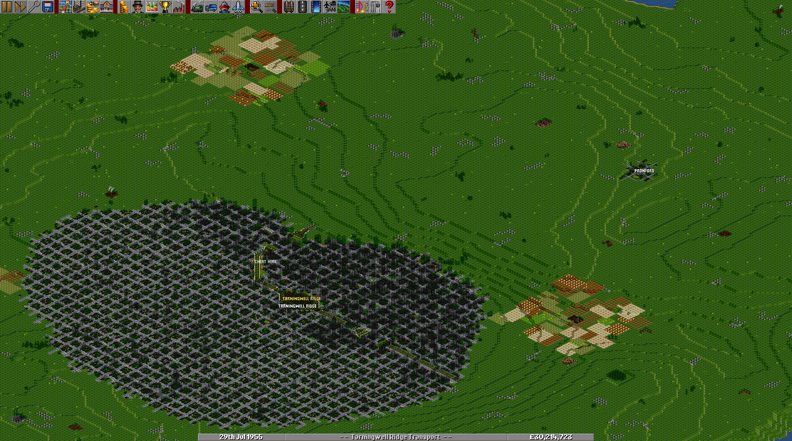

New Public Server Game started (#118)
Today, after 20 days of playing and engineering on game #117, we started a new game. The new map is designed by Chris Booth. The game is set just after World War II. All passenger transport is destroyed and has to be re-engineered. The main objective of the map is to rebuild this infrastructure, but also build the post WWII-Industry.

Currently we are designing possible plans for the network infrastructure. We ask all players to give input or design their own plan ! It is no problem if you never have designed a plan, other players are more than welcome to help you and give you feedback.
If you havent played much on our Public Server, we advise you to go to our Wiki and read about our basic building concepts and rulesets.
Categories: Public Server
Creating a good new game - Call for scenarios and maps at #openttdcoop November 11, 2008 21:29
[…] we currently have started a new game, prior to that – as usual – the discussion about what kind of map should be chosen, which newgrf we […]